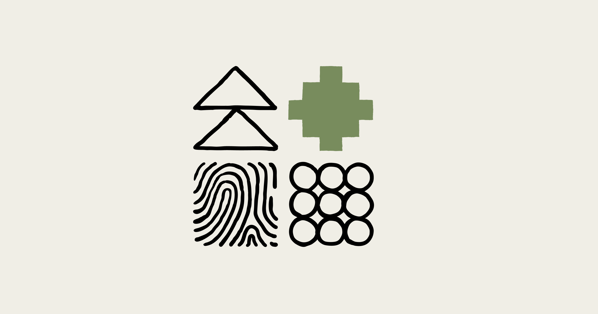
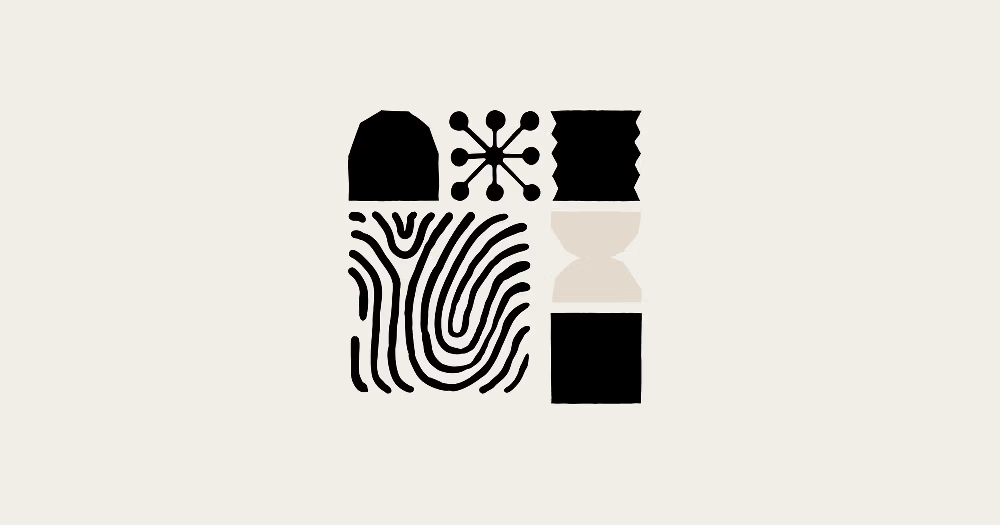
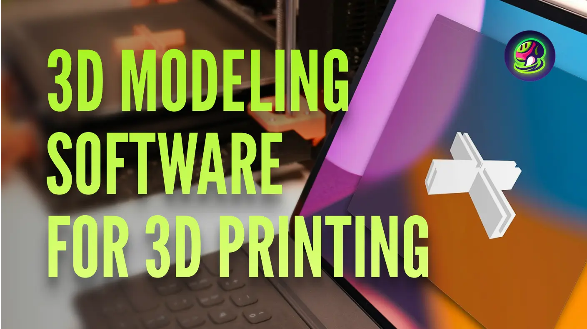
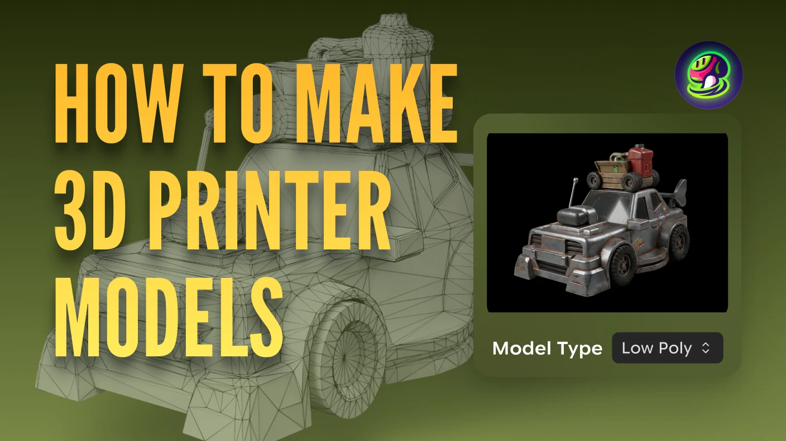
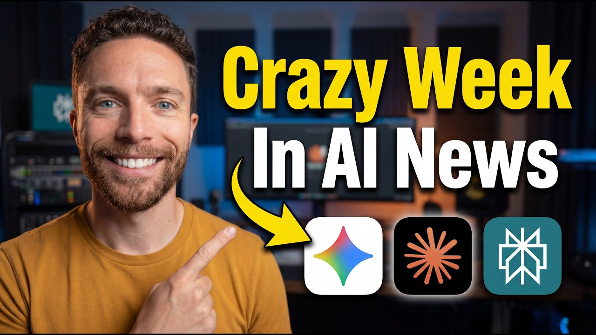

Quantifying infrastructure noise in agentic coding evals
Anthropic가 모델 자체보다 개발 워크플로 쪽에 더 가까운 공식 업데이트를 내놨습니다. 이건 데모 성능보다 개발 공정, 평가, 장기 실행 같은 진짜 실무 레이어를 두껍게 만드는 변화입니다.
새 데모 영상 하나보다, 백오피스 배선 공사를 다시 한 느낌입니다.
이번 주 LLM은 성능표보다 운영표가 더 중요해진 주간이었습니다.

Anthropic가 모델 자체보다 개발 워크플로 쪽에 더 가까운 공식 업데이트를 내놨습니다. 이건 데모 성능보다 개발 공정, 평가, 장기 실행 같은 진짜 실무 레이어를 두껍게 만드는 변화입니다.
새 데모 영상 하나보다, 백오피스 배선 공사를 다시 한 느낌입니다.

지난 한 달간 사용자들의 클로드 응답 품질 저하 보고가 있었으며, 앤트로픽은 이를 클로드 코드, 클로드 에이전트 SDK, 클로드 코워크에 영향을 미친 세 가지 변경 사항 때문으로 파악하여 4월 20일부로 모두 해결했습니다. AI 모델의 성능은 한 번 구축되면 끝이 아니라 지속적인 관리와 업데이트가 필요하며, 이러한 해결 과정은 안정적인 AI 서비스 운영을 위한 필수적인 노력임을 보여줍니다.
마치 정밀한 기계가 주기적인 점검과 미세 조정을 거쳐야 최고의 성능을 유지하는 것과 같습니다.
이미지 생성은 화질 과시보다 테스트를 얼마나 많이, 싸게 돌릴 수 있느냐가 더 큰 경쟁 포인트로 보였습니다.
Adobe가 Firefly 프로모션의 최신 혜택, 업데이트, 추가 세부 정보를 확인할 수 있도록 안내했습니다. 이미지 생성 분야에서 Adobe Firefly가 제공하는 지속적인 혜택과 업데이트는 기술 발전과 사용자 경험 확장의 중요성을 강조합니다.
한 번 잘 나오는 필터보다, 작업실 조명이 통째로 바뀐 느낌에 가깝습니다.
Midjourney가 새로운 버전 8.1을 알파 웹사이트(alpha.midjourney.com)에 선보였으며, 이 업데이트로 이미지들이 한층 더 아름답게 표현됩니다. 이번 개선으로 사용자들은 별도의 보정 없이도 훨씬 더 세련되고 만족스러운 결과물을 바로 얻을 수 있게 되었으니, 창작 과정의 효율성이 크게 향상될 전망입니다.
마치 흐릿했던 사진에 선명도 필터를 입힌 것과 같습니다.
3D 쪽은 멋진 결과물보다 후속 수정과 파이프라인 연결이 더 중요해진 흐름입니다.

AI 기반 플랫폼 Meshy는 3D 모델 제작 및 반복 작업을 몇 시간에서 몇 분으로 단축시켰습니다. 이러한 변화는 아이디어를 출력 가능한 모델로 빠르게 전환하며, 3D 프린팅의 전반적인 작업 흐름을 혁신적으로 바꿉니다.
상상 속 형태가 손안의 물건으로 즉시 피어나는 순간이 찾아왔다.

Meshy는 블로그를 통해 AI 지원 디자인 도구를 활용하여 3D 프린팅 모델을 쉽게 만드는 단계별 가이드를 공개했습니다. 이 가이드는 디자인부터 기하학적 형태를 다듬는 과정을 포함합니다.
STL 또는 3MF 파일로 내보내 슬라이서에서 준비하는 전 과정을 안내합니다.
에이전트/자동화는 데모보다 실제로 어디까지 맡길 수 있느냐가 핵심입니다.
현재 Claude, ChatGPT 같은 AI 도구들은 CRM이나 프로젝트 관리 시스템 등 기업의 비즈니스 시스템과 단절되어 있습니다. MCP(Model Context Protocol)는 AI 제안을 수동으로 복사해 붙여넣어야 하는 비효율적인 상황을 해결합니다.
똑똑한 비서 한 명보다, 자주 하던 심부름에 전용 동선을 깔아 놓은 느낌입니다.
u/PopPsychological1218 쪽에서 이번 주 흐름을 보여주는 공식 업데이트가 나왔습니다. 에이전트 영역은 데모보다 실제 워크플로에 몇 단계까지 맡길 수 있느냐가 승부처입니다.
똑똑한 비서 한 명보다, 자주 하던 심부름에 전용 동선을 깔아 놓은 느낌입니다.
이번 주 이슈랑 같이 보면 맥락 잡기 좋은 영상 3개만 골랐습니다. 뉴스형 브리핑 위주로 넣었습니다.


이번 주 웹진에서 다룬 Claude 흐름을 같이 훑기 좋은 영상입니다.

이번 주 웹진에서 다룬 Anthropic 흐름을 같이 훑기 좋은 영상입니다.